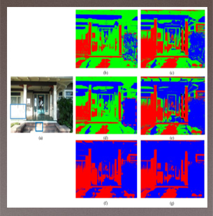
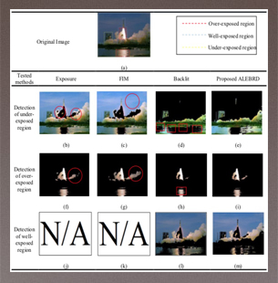
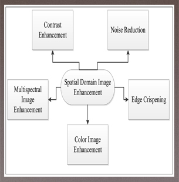

Research Projects
In the field of image processing, I have completed several projects that I would like to share three of them with you. All of these projects were focusing on solving the issue of non-uniform illumination and low contrast images. This issue may cause huge problems in many sectors, such as biomedical, security, and marine science. This issue may occur in the x-ray, microscopic, MRI, underwater, and security camera (CCTV) images. Below I will take you in a short and brief tour of the three most recent projects of mine, to show you how I have used image processing to solve three different issues in the biomedical sector.
Project 1: “Local Neighbourhood Image Properties for Exposure Region Determination Method in Nonuniform Illumination Images.”
 This project is the most recent project that had been done with the co-operation with the Intelligent system and research team at the school of electrical and electronic engineering at University Science of Malaysia (USM). This study explains the importance of determining the different areas of illumination to the enhancement of nonuniform illumination images. Most determination methods divide the regions of nonuniform illumination images into bright and dark illuminated areas. There are three methods that divide the non-illumination image into three regions which are ALEBRD, Exposure 3R and Backlit. Based on these methods, Backlit and Exposure 3R focus on intensity level only to differentiate the area of illumination while ALEBRD evaluates the contrast of local neighbour based on the intensity. Due to insufficient pixels information since only the intensity is considered by the existing method, thus leading to the inaccurately determine areas. The proposed method addresses this problem by considering two other image attributes, namely, contrast and entropy. All the attributes are determined in the local area. The experimental results show that the proposed method qualitatively produced better results than the other techniques. Additionally, according to the survey results, experts agree and support that the proposed method is better that the current methods in terms of region determination capability. This research is published in April 2020 at IEEE ACCESS ISI journal with an impact factor of 4.098.
Project 2: “Adaptive Fuzzy Exposure Local Contrast Enhancement for Non-uniform Illumination Images.”
 This project is based on the results obtained for all three different types of image databases (i.e. standard, underwater and microscopic human sperm images), the two state-of-the-art methods (i.e. Exposure, and FIM) were unable to determine the image into three regions. The reason is both methods only provide a single threshold which can only divide the image into two regions only namely over-exposed and under-exposed. The other state- of-the-art region determination method (i.e. Backlit method) is able to determine the image into three regions. However, the output of the determined regions was lack of accuracy, which leads to miss-classification or over or underdetermine of those regions. On the other hand, the proposed ALEBRD method had successfully overcome the previous issues by providing the best region determination performance. With prominent results presented in this paper, the proposed region determination techniques could be extensively applied in enhancing digital images particularly those with non-uniform illumination issues. In addition, the proposed region determination technique could aid any segmentation process since it can significantly distinguish low contrast regions. This advantage will improve the accuracy of detection and diagnosis in various applications. This research is published in April 2020 at Computing and Visualisation Science ISI journal with the impact factor of 0.69.
Project 3: “Non-Uniform Illumination and Low Contrast Images: Symantec Review.”
 Digital image enhancement is one of well-known and the main keys in digital image processing. Digital image enhancement is to improve the image quality in a subjective perspective. One of the main issues facing digital image enhancement is the non-uniform illumination and low contrast image enhancement. To solve this issue, it has to enhance the image locally. To apply local image enhancement techniques, it has to be determined into regions using image region determination techniques to sperate the image into multiple regions based on the pixels distribution value and that to solve the non-uniform illumination and low contrast image issue. The existing image enhancement techniques classified into three main categories: Histogram Modification Based Image Enhancement Techniques, Fuzzy Logic Based Enhancement Techniques, and Other Image Enhancement techniques. This review paper, presents an overview of digital image processing by focusing on image enhancement and image region determination processing techniques. Thus, the contribution of this paper is to classify and review image enhancement processing techniques for non-uniform and the low contrast images by presenting the advantages and disadvantages of each state-of-the-art algorithm in-order to show the direction of digital image enhancement and digital image region determination for future research. This research is published in April 2020 at Computer Science ISI journal with the impact factor of 0.846.
Google Scholar Profile
The whole research papers
If you are interested to see all my research and publication papers, you can access to my Google Scholar profile, that you can find the publications there.
ORCID Profile
The whole research papers
My ORCID profile is ORCID profile.
Blockquote
The harder you work for something, the greater you’ll feel when you achieve it.